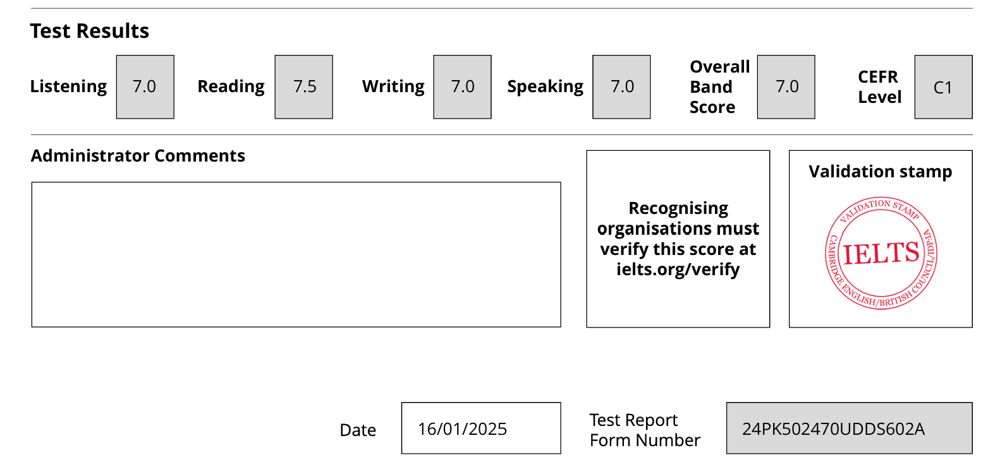
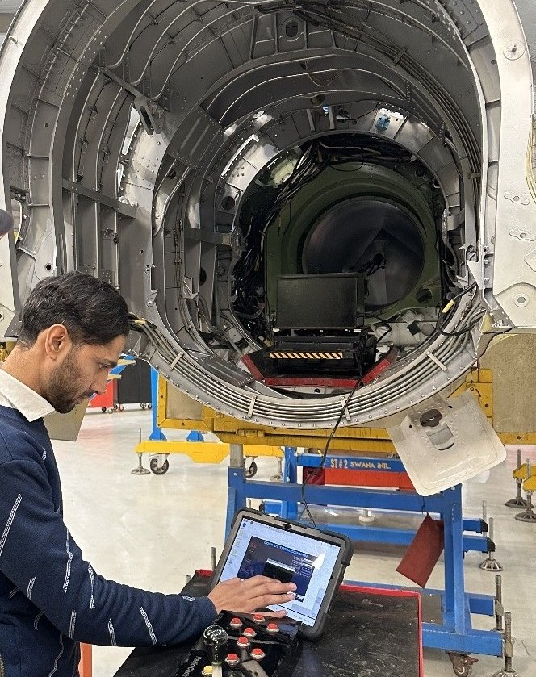
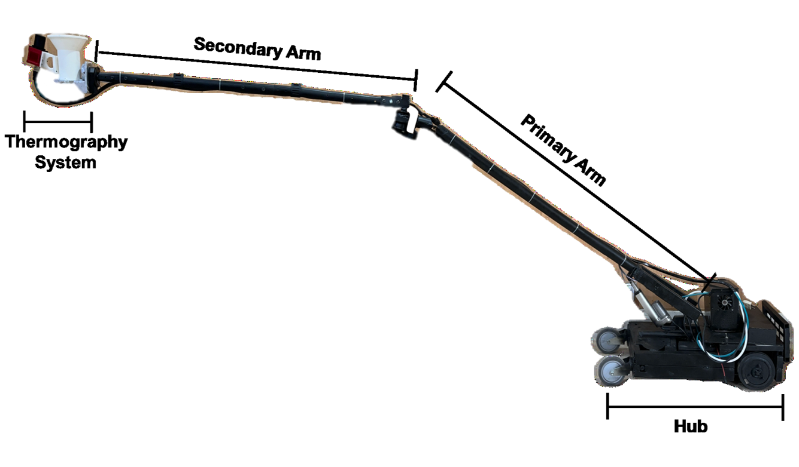

Successfully passed IELTS exam with commulative 7 bands (L:7, R:7.5, W:7, S:7) from IDP Pakistan.

Milestone Achieved
Date: September 2024
Successfully developed the first version of a portable, wirelessly control robotic arm (LITBot) to perform
Lock-in Thermography on aircraft structures (specifically engine intake area), with the aim of detecting
defective rivets by using the integrated post-processing algorithm. The robot has been tested on lab
samples as well as on actual aircraft.


Milestone Achieved
Date: February 2024
Phase I of our project on Lock-in Thermography has been completed, with the development of an Image Processing
based algorithm for the detection of defects in aircraft structures. The algorithm has been tested on lab samples
as well as on acutal aircraft.